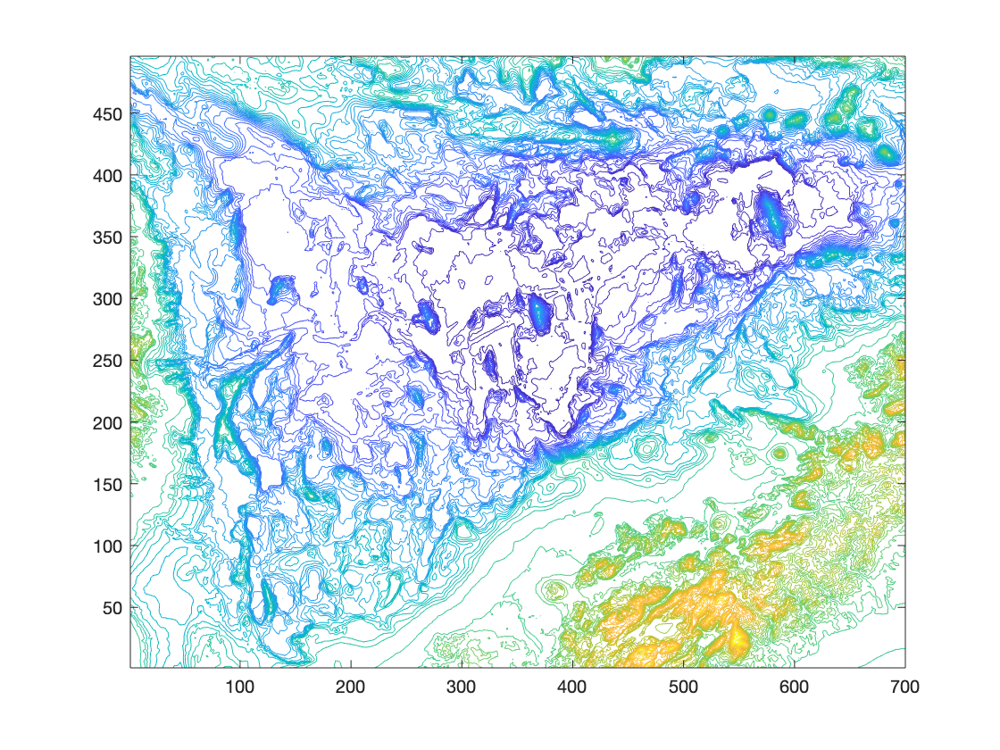
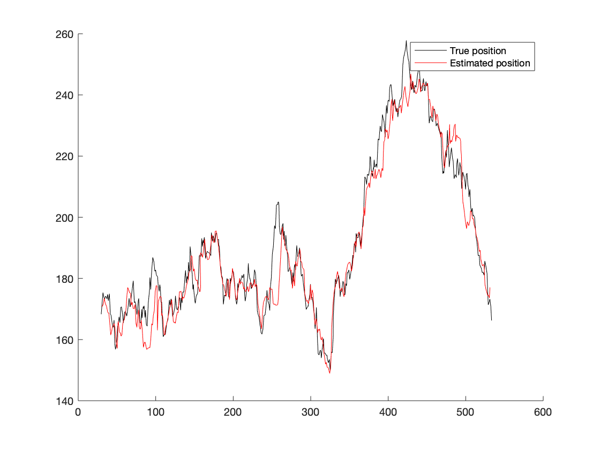
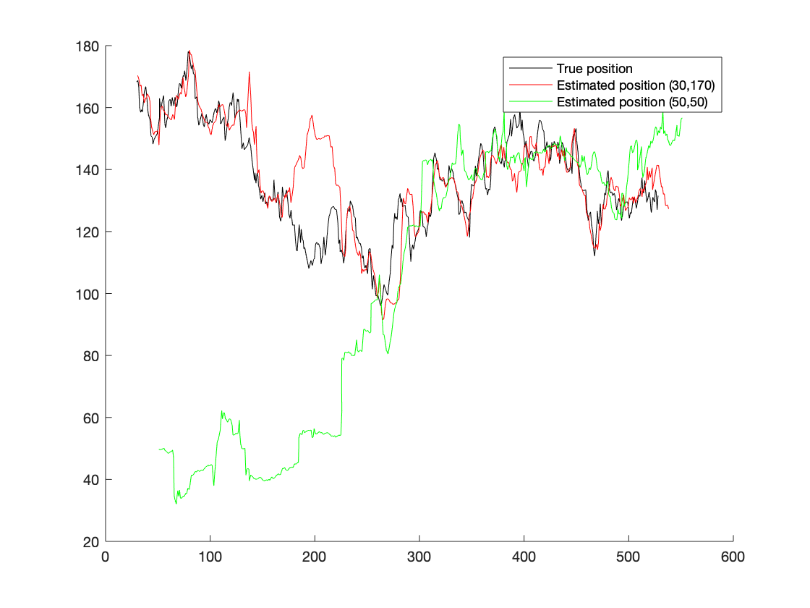

Estimation
Particle Filtering

Introduction
The purpose of this project was to estimate the position of an autonomous underwater vehicle based on depth measurement using a pressure sensor and a distance measurement to the seabed using a sonar.
The eastward speed is relatively well known but the vehicle's position can be disturbed by marine currents.
We, therefore, tried to estimate the position using a particle filter, and using a bathymetric map.
Prediction and particle generation
For the prediction part of the algorithm we generate the particles using the known motion model:
-
In this model
and
represent state noises or uncertainties.
We can, then, use this model in Matlab to generate random particles:
xu=xu+[v0*ones(1,numSamples); zeros(1,numSamples)]+sqrt(Q)*randn(2,numSamples);
Adjusting the weights of the particles
After that, we have to adjust the significance weights of the previous particles. In order, to do so, we use the gaussian distribution used to model uncertainties in the motion model.
Therefore the weights are computed as following:
q = normpdf(y(t,1),interp2(Z,xu(1,:),xu(2,:)),sqrt(Rreal)).*q;
The physical interpretation of the weights given to the particle is that particles that are generated far away from the current position are less likely to represent the next position.
Resampling
Finally, a resampling algorithm is added in order to keep only particles with a significant weight, and, therefore, we keep only particle that are useful for the estimation:
qc = [0 cumsum(q)];
[~,H] = histc(sort(rand(numSamples,1)), qc);
xur=xu(:,H); q=ones(1,numSamples)./numSamples;
Results
As we can see in the figure below, the estimation is quite good knowing that we only had depth sensors.

Howerver, the estimation is really sensitive to the initialisation of the particle filter as we can see on the figure below:
